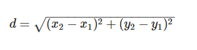

Teori dan dan Cara Kerja Algoritma KNN (K-NEAREST NEIGHBOUR)
Teori dan dan Cara Kerja Algoritma KNN (K-NEAREST NEIGHBOUR)¶
Pengertian K-nearest neighbors¶
K-nearest neighbors atau knn adalah algoritma yang berfungsi untuk melakukan klasifikasi suatu data berdasarkan data pembelajaran (train data sets), yang diambil dari k tetangga terdekatnya (nearest neighbors). Dengan k merupakan banyaknya tetangga terdekat.
Cara Kerja Algoritma K-Nearest Neighbors (KNN)¶
K-nearest neighbors melakukan klasifikasi dengan proyeksi data pembelajaran pada ruang berdimensi banyak. Ruang ini dibagi menjadi bagian-bagian yang merepresentasikan kriteria data pembelajaran. Setiap data pembelajaran direpresentasikan menjadi titik-titik c pada ruang dimensi banyak.
Klasifikasi Terdekat (Nearest Neighbor Classification)¶
Data baru yang diklasifikasi selanjutnya diproyeksikan pada ruang dimensi banyak yang telah memuat titik-titik c data pembelajaran. Proses klasifikasi dilakukan dengan mencari titik c terdekat dari c-baru (nearest neighbor). Teknik pencarian tetangga terdekat yang umum dilakukan dengan menggunakan formula jarak euclidean*.* Berikut beberapa formula yang digunakan dalam algoritma knn.
-
Euclidean Distance¶
Jarak Euclidean adalah formula untuk mencari jarak antara 2 titik dalam ruang dua dimensi.

-
Hamming Distance¶
Jarak Hamming adalah cara mencari jarak antar 2 titik yang dihitung dengan panjang vektor biner yang dibentuk oleh dua titik tersebut dalam block kode biner.
-
Manhattan Distance¶
Manhattan Distance atau Taxicab Geometri adalah formula untuk mencari jarak d antar 2 vektor p,q pada ruang dimensi n*.*
-
Minkowski Distance¶
Minkowski distance adalah formula pengukuran antar 2 titik pada ruang vektor normal yang merupakan hibridisasi yang mengeneralisasi euclidean distance dan mahattan distance.
Teknik pencarian tetangga terdekat disesuaikan dengan dimensi data, proyeksi, dan kemudahan implementasi oleh pengguna.
Banyaknya k Tetangga Terdekat¶
Untuk menggunakan algoritma k nearest neighbors, perlu ditentukan banyaknya k tetangga terdekat yang digunakan untuk melakukan klasifikasi data baru. Banyaknya k, sebaiknya merupakan angka ganjil, misalnya k = 1, 2, 3, dan seterusnya. Penentuan nilai k dipertimbangkan berdasarkan banyaknya data yang ada dan ukuran dimensi yang dibentuk oleh data. Semakin banyak data yang ada, angka k yang dipilih sebaiknya semakin rendah. Namun, semakin besar ukuran dimensi data, angka k yang dipilih sebaiknya semakin tinggi.
Algoritma K-Nearest Neighbors¶
- Tentukan k bilangan bulat positif berdasarkan ketersediaan data pembelajaran.
- Pilih tetangga terdekat dari data baru sebanyak k.
- Tentukan klasifikasi paling umum pada langkah (ii), dengan menggunakan frekuensi terbanyak.
- Keluaran klasifikasi dari data sampel baru.
Langkah-langkah menginstal library:¶
Install pandas
pip install pandasInstall numpy
pip install numpyInstall matplotlib
pip install matplotlibInstall sklearn
pip install sklearnLangkah-langkah implementasi¶
Mengimpor library , dimana library digunakan untuk mendukung implementai K-Nearest Neighbors dan untuk membaca suatu file yang akan di importkan.
import pandas as pd
from sklearn.neighbors import KNeighborsClassifier
from sklearn.model_selection import train_test_splitMengimpor dataset, dimana dataset digunakan untuk implementasi K-Nearest Neighbors
data_orj = pd.read_csv("iklan_sosmed.csv")Mengambil semua data untuk percobaan
data = data_orj.loc [:,'User ID':'Beli']Mengambil 3 kolom
data_knn = data[['Usia','Beli','EstimasiGaji']]Menginput jumlah K atau jumlah tetangga terdekat
inK = int(input("Masukkan K : "))Mencari KNN dengan menggunakan sklearn neighbors clssifier
knn = KNeighborsClassifier(n_neighbors = inK)
x,y = data_knn.loc[:,data_knn.columns != 'Beli'], data_knn.loc[:,'Beli']
x_train,x_test,y_train,y_test = train_test_split(x,y,test_size = 0.3, random_state = 42)
knn.fit(x_train,y_train)
prediction = knn.predict(x_test)Melakukan perintah untuk menampilkan akurasi dan prediksi data
print('KNN dengan (K =',inK,') Akurasinya adalah: ', knn.score(x_test,y_test))
print("")
datatest = pd.DataFrame(x_test)
datatest["Beli"] = y_test
datatest["prediksi"] = prediction
print ("Data Asli dan Prediksinya")
print (datatest)
Hasil tampilan dataset :¶
Masukkan K : 4
KNN dengan (K = 4 ) Akurasinya adalah: 0.7666666666666667
Data Asli dan Prediksinya
Usia EstimasiGaji Beli prediksi
209 46 22000 0 0
280 59 88000 1 1
33 28 44000 0 0
210 48 96000 1 1
93 29 28000 0 0
84 30 62000 0 0
329 47 107000 1 1
94 29 83000 0 0
266 40 75000 0 0
126 42 65000 0 0
9 35 65000 0 0
361 53 34000 1 1
56 23 48000 0 0
72 20 23000 0 0
132 30 87000 0 0
42 35 108000 0 1
278 52 38000 1 0
376 46 74000 0 0
231 39 42000 0 0
385 56 60000 1 0
77 22 27000 0 0
15 29 80000 0 0
391 47 23000 1 0
271 59 76000 1 0
0 19 19000 0 0
396 51 23000 1 0
114 42 80000 0 0
225 37 53000 0 0
262 55 125000 1 1
104 19 21000 0 0
.. ... ... ... ...
233 49 86000 1 0
335 36 54000 0 0
118 40 59000 0 0
220 41 80000 0 0
180 26 16000 0 0
314 39 79000 0 0
373 59 130000 1 1
380 42 64000 0 0
239 53 143000 1 1
75 34 112000 1 0
247 57 122000 1 1
110 39 71000 0 0
16 47 25000 1 0
66 24 19000 0 0
153 36 50000 0 0
7 32 150000 1 1
19 48 29000 1 1
137 30 107000 1 1
355 60 34000 1 1
349 38 61000 0 0
131 33 31000 0 0
387 39 71000 0 0
292 55 39000 1 0
386 49 39000 1 0
297 43 112000 1 0
60 27 20000 0 0
79 26 17000 0 0
285 37 93000 1 1
305 42 54000 0 0
281 35 61000 0 0
[120 rows x 4 columns]